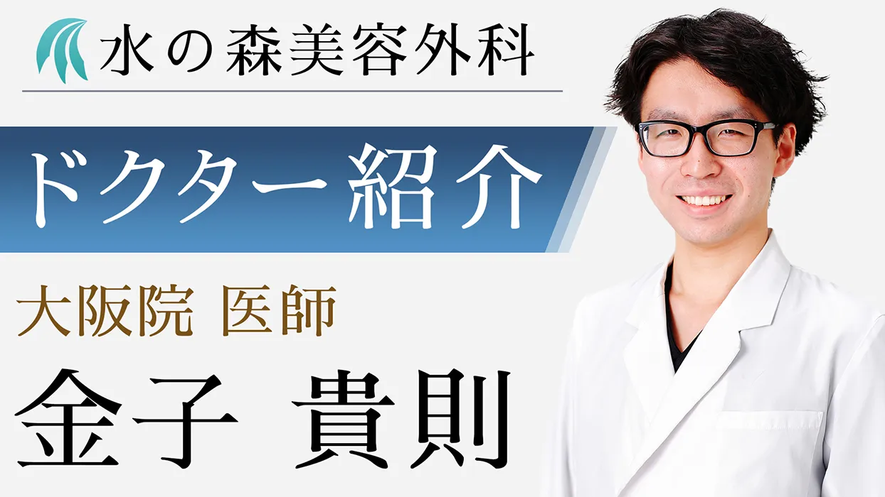

福岡院ドクター紹介
福岡院ドクターをご紹介いたします
院長挨拶
患者様のお悩みが解消され、外見がより良くなることによって患者様が笑顔になれるよう、確かな知識と医療技術、思いやりの心をもって、しっかりカウンセリングさせていただきます。
金子院長 紹介動画
経歴
- 平成30年大阪医科大学医学部 卒業
- 平成30年市立ひらかた病院
- 令和2年水の森美容外科 入職
- 令和4年水の森美容外科福岡院院長就任
特記事項
- BOTOX VISTA認定医
- ジュビダームビスタ認定医
- 日本美容外科学会（Jsas）正会員
- 日本美容外科医師会 会員
Wataru Takee
水の森美容外科 総院長
竹江 渉
総院長挨拶
常に患者様を身内と思って接するカウンセリング姿勢には多くの患者様から支持されており、また外科手術はオールラウンドにわたり絶対的な自信をもつ。

経歴
- 平成10年東京医科大学医学部 卒業
- 平成11年麻酔科 入職
- 平成13年麻酔科標榜医免許 取得
- 大塚美容外科 入職
- 平成16年大手美容外科院長
- 平成18年水の森美容外科 開院
特記事項
- BOTOX VISTA認定医
- ジュビダームビスタ認定医
- 日本美容外科学会（Jsas）正会員
- 日本美容外科医師会 会員
コメント
はじめまして、水の森美容外科院長の竹江 渉です。
私が初めて入局した美容外科は業界の中でも高い医療技術を誇るすばらしい病院でした。
師事した医師は日本でもトップといわれる医師で、そこから学んだことは高い技術は勿論のこと、美容外科医として真摯な姿勢であり、常に患者様の目線で診察することの重要性でした。
この経験は生涯の財産となり続けるでしょう。
その後、他院で院長に就任し、多くの患者様に出会い、患者様の希望と夢の実現のために尽力して参りました。
ここ名古屋でも、今までの経験と初心を忘れずに皆様に愛される病院として精一杯努力していきたいと思います。
ここ数年の美容外科ブームを経て美容外科の認知度は一気に高まりました。
しかし、今現在でも美容外科に興味はあるが行動には移せないという方は多いと思います。
それは金銭的な問題や手術や結果に対する不安などの理由が多いのではないでしょうか？
そんな方々に伝えたいのが美容外科というのは確かな技術をもとに正しく応用されればすばらしい医療であるということです。
それは外見的な美しさをつくるだけでなく、内面的な美しさまでも引き出し貴女の人生に夢や希望までももたらすことができると確信しております。
又患者様を正しく導くにあたって最も重要なのがカウンセリングです。
患者様の悩みや希望をゆっくり聞かせて頂き正しい情報を伝える、そして双方の理解が一致し信頼関係が生まれた時初めて患者様の期待に応えられるのだと思います。
今後美容外科が皆さんにとってもっと身近なものとなりたくさんの患者様にお会いできることを心より楽しみにしております。
コメント
学生時代、家庭教師のアルバイトをしていました。
担当していたのは自分の見た目に自信が無く、そのせいで人との関わり合いも少なくなってしまっていた中学生の男の子でした。
研修医時代、久しぶりに大学生になった彼に会いとても驚きました。
彼は美容外科、皮膚科に通い、自分の見た目を理想に近付け、非常に逞しくなっていました。外見もさることながら、内面が大きく変わっていたことが印象に残っています。
あまり人に心を開かず人と関わるのを避けていた彼が、積極的にコミュニケーションを取り、 明るく楽しそうにしている姿はとても輝いて見えました。
この時から私は美容外科医に魅力を感じ、志すようになりました。
しかし、美容医療は利益中心主義であるというイメージがあり、個人的に良い印象は持っていませんでした。
そんな時、水の森美容外科と出会いました。
利益を追い求めるわけではなく、患者様の満足の為に施術を提案する「患者様中心主義」。 これが私の求めていた美容医療のあるべき姿でした。
医療においては信頼関係が大事であると私は思っております。
患者様のために知識、技術の研鑽を積み重ね、 信頼される医師になるため精進して参ります。
ご来院お待ちしております。お気軽にお越しください。